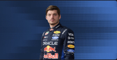
Max Verstappen
Team: Red Bull Racing
Three-time World Champion
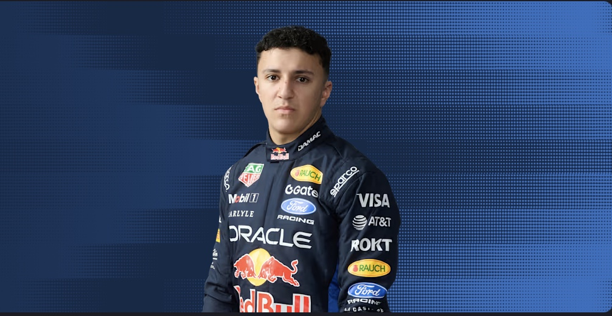
Isack Hadjar
Team: Red Bull Racing
Known for his rapid rise through F4, F3, and F2

George Russell
Team: Mercedes
2021 Best Rookie

Kimi Antonelli
Team: Mercedes
2022 Best Rookie

Charles Leclerc
Team: Ferrari
Monaco-based driver known for his aggressive driving style
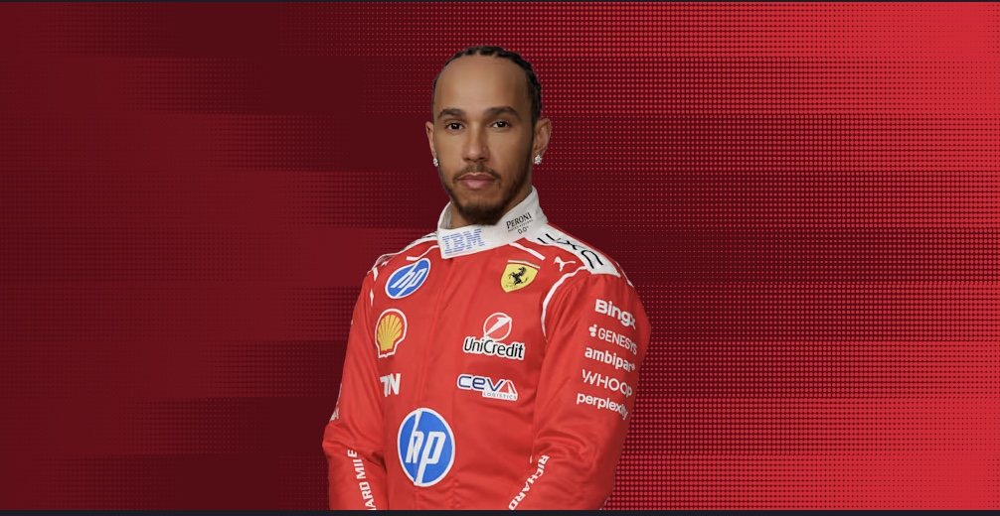
Lewis Hamilton
Team: Ferrari
7 Time World Champion
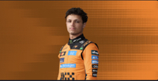
Lando Norris
Team: Mclaren
Won his first world championship in 2025
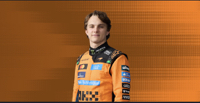
Oscar Piastri
Team: McLaren
Best rookie in 2025
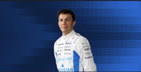
Alex Albon
Team: Williams
2018 F2 Champion
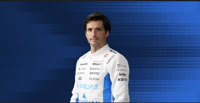
Carlos Sainz
Team: Williams
2019 F2 Champion
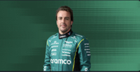
Fernando Alonso
Team: Aston Martin
Been in F1 since 2001
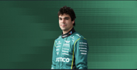
Lance Stroll
Team: Aston Martin
Known for his strong wet-weather performances
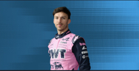
Pierre Gasly
Team: Alpine
2021 F2 Champion
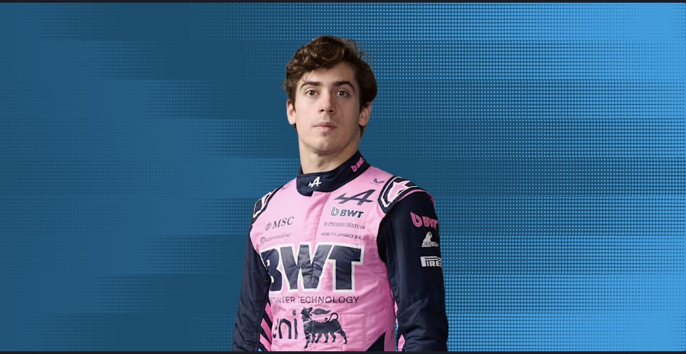
Franco Colapinto
Team: Alpine
2024 F2 Champion
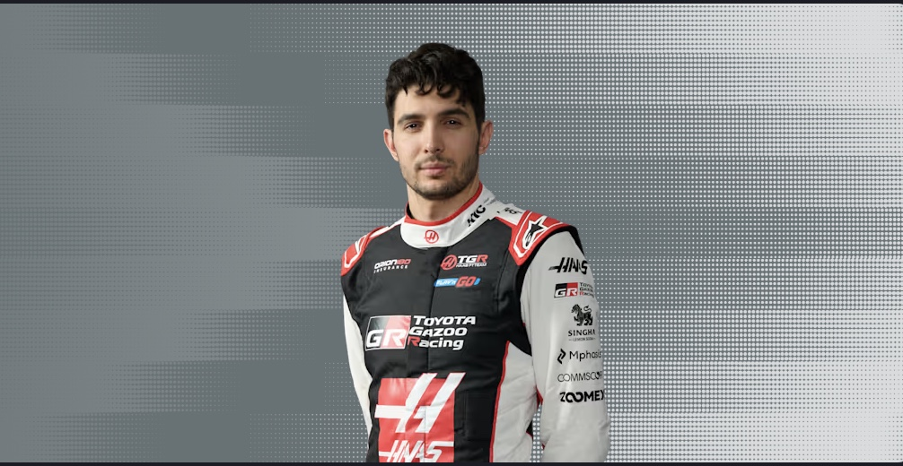
Esteban Ocon
Team: Haas F1 Team
Began his F1 career in 2016
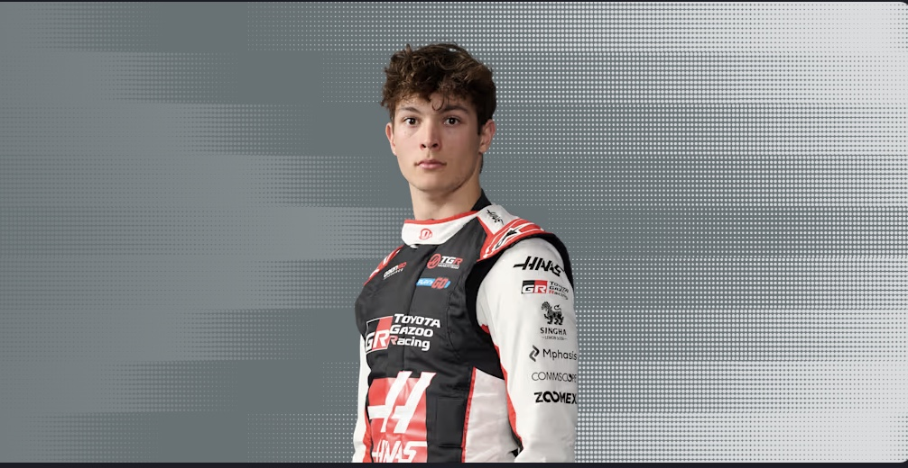
Oliver Bearman
Team: Haas F1 Team
2025 F2 Champion
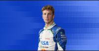
Liam Lawson
Team: Racing Bulls
2023 F2 Champion
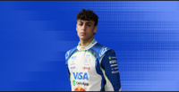
Arvid Lindblad
Team: Racing Bulls
2025 F2 Champion
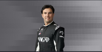
Sergio Perez
Team: Cadillac
2022 F2 Champion
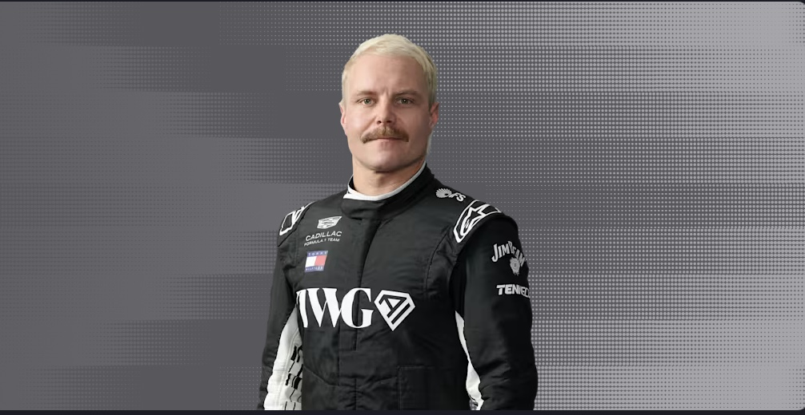
Valtteri Bottas
Team: Cadillac
2020 F2 Champion
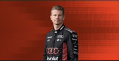
Nico Hulkenberg
Team: Audi
2024 F2 Champion
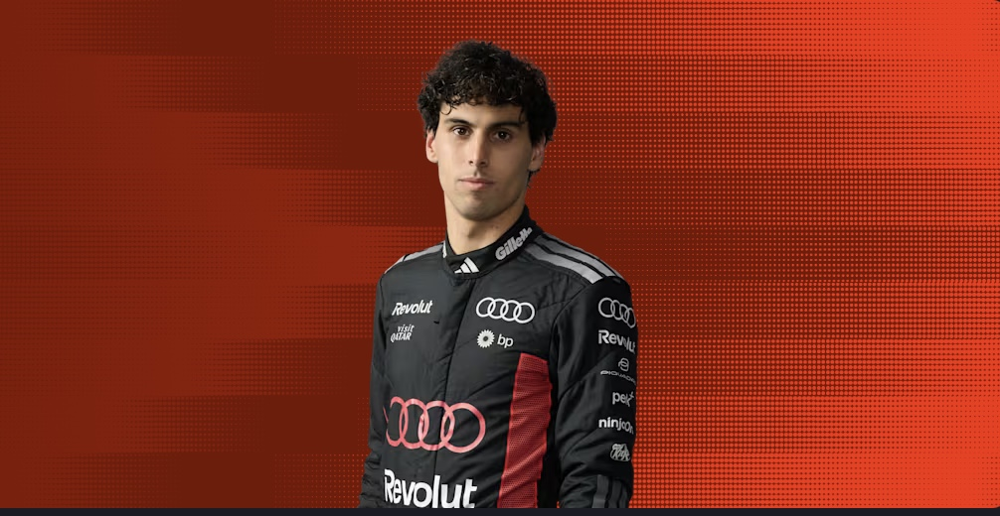
Gabriel Bortoleto
Team: Audi
2025 F2 Champion
Driver Drama - The Popular ones
Hamilton vs Roseberg (2016)
This rivalry started as a friendship which resulted in them racing against each other and not as a team.
Fans have called them 'Brocedes' as they were on the same team and celebrate each others wins together, but during the 2016 season in Spain, they took each other out of the race and this is where it turned into rivalry.
Nico Roseberg has since become a journalist for F1 and fans still reminisce on the times when the two drivers were friends, especially when it's Roseberg's turn to interview Lewis.
Hamilton vs Verstappen (2021)
The rivalry between Hamilton and Verstappen is one of the most intense in recent F1 history, with both drivers being among the best in the sport.
It started in 2021 when both drivers were domminant enough to be at the top of the grid and where hungry to win the drivers championship at the end.
However this caused a few collisions and fustrations between them both, but it ended with Verstappen winning the Drivers Championship, but most fans and drivers seem to disgree on this and belive that Lewis should've won and some disagree with the rules that were laid out.
Vettel Vs Webber (2010/2013)
This rivarly took place in 2010 where Sebasian Vettel and Mark Webber were teammates at Red Bull Racing.
In 2010 they both clashed and retired from the Turkish GP, and in 2013 Vettel ignored the teams orders to not overtake Webber.
Sena Vs Prost (1989 - 1990)
In 1989 Prost collided with Senna in Suzuka causing him to retire from the race and lose the championship title to Alain Prost.
Then in 1990 Ayrton Senna collided with Prost in the same corner at the beginning of the season in order to secure the championship win for him that season.
Track Information
Here I will help you understand the different types of tracks in F1 and what each part means for the drivers.
Street Circuits
These tracks are usually harder for drivers to overtake on, so they would mainly rely on any safety cars that come out of pit stops.
Most of the time, the order that the drivers start the race in, are the places that they will finish the race in, Monaco is a good example of a street cirucuit because it has many bends and tight corners and straights not quite long enough for a safe overtake.
Hybrid circuits
These tracks are a mix of street circuits and traditional circuits, they have some tight corners but also have long straights that allow for overtaking, examples of this are Singapore and Baku.
Most of these circuits mainly take over public roads for the weekend which take a while to set up, but others are dedicated circuits only for the drivers to use.
What do the colours mean on the track images?
The colours on the track images represent different sections of the circuit, such as the kerbs, runoff areas, and the track surface itself.
The kerbs are usually painted in bright colours such as red and white, and they are located on the inside and outside of corners. They are designed to provide a visual reference for drivers and to help them maintain control of their cars when they are close to the edge of the track.
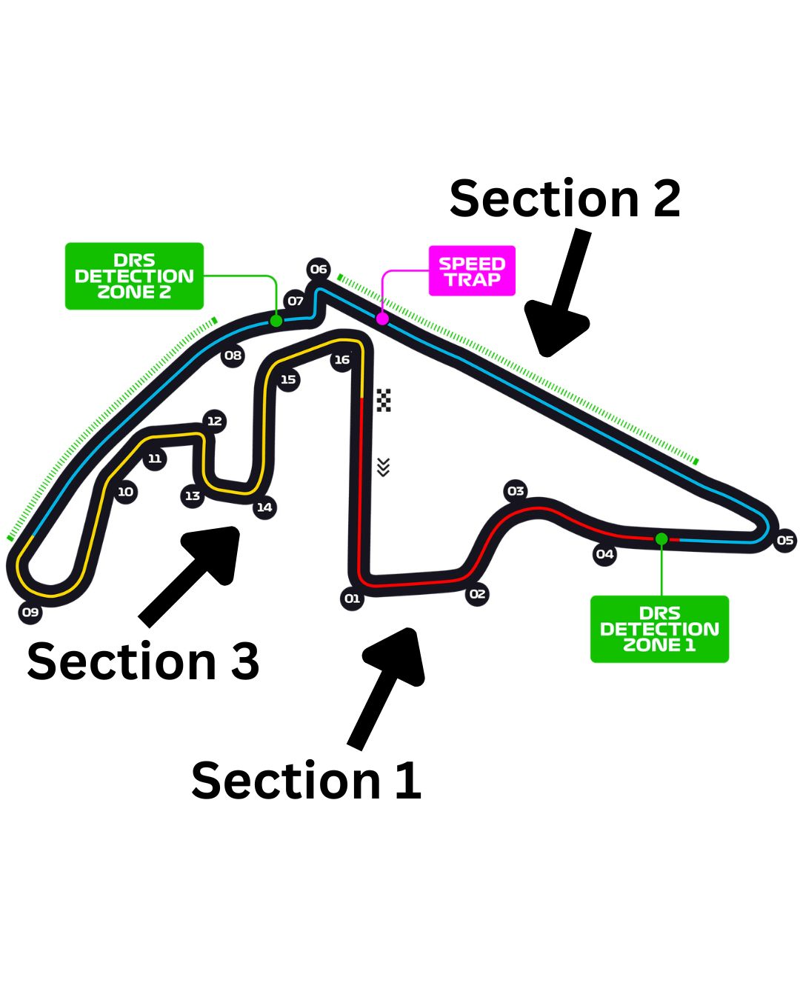
Here you can see labelled each corner and section, and where DRS is enabled for the drivers to use to overtake.
Frequently asked questions
What is a pit stop?
A pit stop is when a Formula 1 car stops in the pit lane during a race to change tyres, due to them being worn down or a change in the weather.
How does the point system work?
| Position | Number of points |
|---|---|
| 1st | 25 points |
| 2nd | 18 points |
| 3rd | 15 points |
| 4th | 12 points |
| 5th | 10 points |
| 6th | 8 points |
| 7th | 6 points |
| 8th | 4 points |
| 9th | 2 points |
| 10th | 1 point |
What are penalty points?
F1 drivers are given penalties for on-track safety infringements
They can get them if they do any of these things:
- Speeding in the pit lane
- Causing a collision
- Ignoring yellow flags
- Unsafe release from the pit stop
- Exceeding track limits
- Speeding under red flag conditions
- Forcing another driver off the track
What do the coloured flags mean?
The coloured flags in Formula 1 are used to communicate important information to drivers during a race. Here are the main ones:
- Yellow Flag: Indicates a hazard on the track, such as debris or an accident. Drivers must slow down and be prepared to stop if necessary.
- Red Flag:Indicates a serious hazard on the track, such as a major accident or dangerous conditions. The race is immediately stopped.
- White Flag:Indicates that a slower vehicle is ahead, such as a safety car or a vehicle with mechanical problems. Drivers must be prepared to slow down and allow the slower vehicle to pass.
- Green Flag:Indicates that the track is clear and safe for racing. Drivers can resume normal racing pace.
How long are the races?
The actual races range from 1hour and a half, to 2 hours.
But the Sky Sports programme usually starts an hour before the race, this is to watch the grid walk where the journalist interview any celebrities and gives us a chance to see the cars up close before they race.